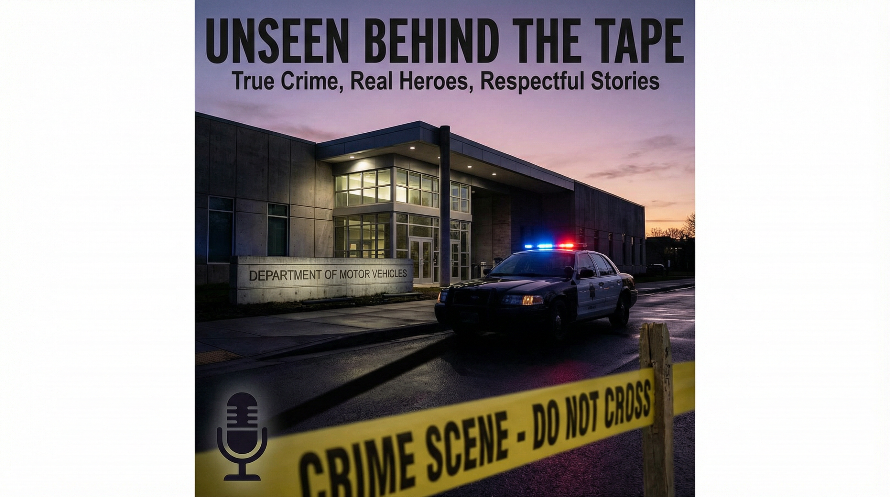

December 26, 2025

On December 23, 2025, what should have been an ordinary Tuesday afternoon at the Karen L. Johnson Division of Motor Vehicles in New Castle, Delaware, turned into a tragedy that would claim the life of a dedicated public servant and forever alter the lives of those who witnessed it.
At approximately 2:00 p.m., the DMV was filled with customers conducting routine business—renewing licenses, registering vehicles, and handling other administrative matters. Among the staff was Corporal Grade One Matthew Snook of the Delaware State Police, a respected officer working an overtime assignment at the reception desk.
Without warning, a 44-year-old man named Rahman Rose entered the building. Rose, whose last known address was in Wilmington, approached Corporal Snook from behind and opened fire with a handgun. The sudden violence shocked everyone present, transforming a mundane government office into a scene of chaos and terror.
Despite being mortally wounded, Corporal Snook's instincts were not to save himself but to protect others. In his final moments of consciousness, he pushed a nearby DMV employee out of the line of fire and shouted for them to run. Even as Rose continued firing, Corporal Snook's actions saved that employee's life—a final act of selflessness that defined his character and his service.
Rose allowed other customers to evacuate the building but remained inside, seemingly waiting for law enforcement to arrive. When officers responded to the scene, a gun battle ensued. A New Castle County police officer, seeing Rose through a window, fired and struck the suspect, ending the immediate threat.
Corporal Snook was rushed to a local hospital, but his injuries were too severe. He passed away later that day, becoming a casualty of senseless violence. A second trooper who responded to the scene sustained non-life-threatening injuries. Two civilians in the building were also injured, though not by gunshot wounds.
Rahman Rose died at the scene, his motive for the attack remaining unclear to investigators. The Delaware State Police Homicide Unit launched a full investigation into the incident, working to understand what led to this tragic act of violence.
Corporal Matthew Snook's death sent shockwaves through the Delaware State Police and the entire community. He was remembered not just as a victim of violence, but as a hero who, in his final moments, thought of others before himself. His actions exemplified the highest ideals of law enforcement: courage, selflessness, and a commitment to protecting the public.
The incident also sparked conversations about workplace safety, the risks faced by law enforcement officers, and the need for continued vigilance in protecting public spaces. For the families affected by this tragedy, for Corporal Snook's colleagues, and for the community of Delaware, December 23, 2025, will forever be a day that reminds us of both the fragility of life and the enduring courage of those who serve.
The Delaware State Police Homicide Unit continues to investigate the incident. Detectives are working to piece together the events leading up to the shooting and to understand the motive behind Rahman Rose's actions. Anyone with information about the incident is encouraged to contact Detective D. Grassi at (302) 365-8441 or daniel.grassi@delaware.gov. Information may also be provided through Delaware Crime Stoppers at 1-800-TIP-3333.
For those affected by this tragedy, support is available through the Delaware State Police Victim Services Unit, which operates 24 hours a day at 1-800-VICTIM-1 (1-800-842-8461).
Subscribe to our newsletter to get notified about new episodes, exclusive content, and updates from CrimeTimeSnacks.